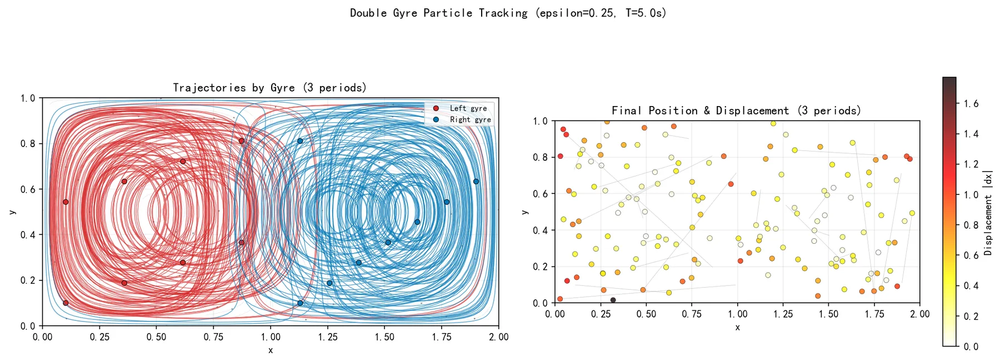

根据标准 Double Gyre 流函数计算二维速度场与涡度，并生成不同时间的流场快照。
Independent Course Project · Numerical Experiment
Double Gyre 流场与粒子追踪
在周期变化的双涡旋流场中计算拉格朗日粒子轨迹，观察不同初始位置的输运、跨涡交换和位移差异。
An independent numerical course project exploring transport in a time-dependent double-gyre flow. I implemented the velocity field, particle integration and visual analysis, while treating the setup as an idealized experiment rather than a full ocean model.

Question
当两个涡旋之间的分界随时间周期摆动时，粒子是否会始终停留在初始涡旋中？哪些初始位置更容易发生跨区输运？轨迹图和位移统计分别能说明什么？
Approach
从多个初始位置释放粒子，通过四阶 Runge–Kutta 方法逐步更新粒子轨迹。
比较流线、典型轨迹、时间演化、最终位移和粒子对扩散等输出。
What the experiment shows
涡旋核心附近的粒子通常保持更规则的闭合或准闭合运动；靠近中间分界和外缘的粒子轨迹对流场的周期变化更敏感。单纯观察瞬时流线不足以判断长期输运，需要沿时间积分粒子轨迹。
这些观察来自理想化参数下的数值实验，用于理解拉格朗日输运概念，不对应某个真实海域。
Limits
- 二维、解析给定的理想化速度场，不含真实海洋中的地形、湍流和边界条件。
- 粒子为被动示踪物，不反馈流场，也没有质量、浮力或沉降过程。
- 数值图像说明模型行为，不构成观测验证或真实海洋预测。